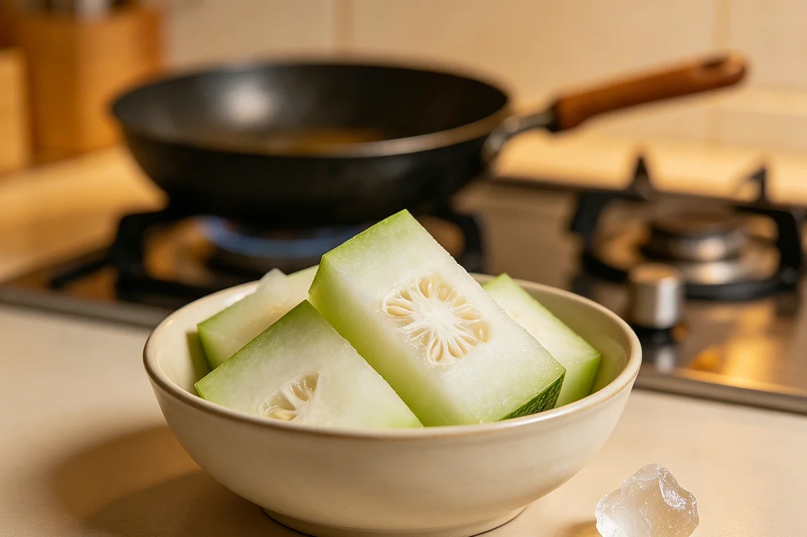

Winter Melon Tea: The Jar That Sat on the Counter Every Autumn
Every autumn, when the air in Chengdu turned so dry it felt like breathing through cotton, my grandmother would pull a pale green winter melon out of the pantry — something she'd been saving since summer — and start one of the quietest, slowest kitchen rituals I've ever watched. A pot. A melon. A chunk of yellow rock sugar. And three hours of nothing but waiting.
Autumn in Chengdu is a strange season. The heat of summer breaks, but the humidity that defines the Sichuan basin doesn't disappear — it just changes shape. Your skin feels tight in the morning. Your throat catches by mid-afternoon. You cough once, then twice, and then you're clearing your throat all day without knowing why. My grandmother called this zao — the dryness that settles into the body when the seasons shift. And her answer to it was always winter melon.

Winter melon — dong gua (冬瓜) in Chinese — is one of those vegetables that doesn't make sense until you've watched someone cook it. It's enormous. Pale green with a frost-like coating on the skin. Inside, the flesh is snow-white and crisp and mostly water. It tastes like almost nothing raw. But simmer it for hours with nothing but rock sugar, and it transforms into something entirely different — a dark amber syrup, thick as honey, that you spoon into a cup of hot water and drink while staring out the window.
How my grandmother made it
She never used a recipe. She didn't need to — she'd been doing it every autumn for forty years. The method was so simple it felt wrong to call it cooking. Wash the melon. Cut it into big chunks — she never peeled it, never removed the seeds. The skin and seeds were the part that mattered, she said. Without them, it was just sweet soup.
She'd layer the chunks in a heavy pot — the same dark clay pot she used for everything — and drop a fist-sized piece of yellow rock sugar on top. The sugar was the color of honey, not the white refined stuff in paper packets. Huang bing tang, she called it — yellow rock sugar. It had a deeper, rounder sweetness than white sugar, more like caramelized fruit than candy.
Then came the part that always surprised me: she added no water. Not a drop. The pot went onto the smallest burner, the flame barely visible, and she'd walk away. An hour later the melon would have surrendered its own liquid — the pot now filled with a pale green juice that hadn't been there before. Two hours in, the chunks turned translucent, like pale jade stained with amber. Three hours, and what was left in the pot was a thick syrup, dark as weak tea, that she'd strain into a glass jar and leave on the counter to cool.
By morning, the syrup had set into something like jelly — a concentrated winter melon extract that you could spoon into a cup, pour hot water over, and stir. One batch lasted a week. When it ran out, she made another. That was autumn.
Her words
My grandmother was not a talkative woman. She sewed in silence. She cooked in silence. She sat in silence on the balcony after dinner, watching the street below without commentary. But there was one thing about autumn she always said, and she always said it while stirring that pot:
"喉咙舒服了，话就多了。" Houlong shufu le, hua jiu duo le. — "When the throat is comfortable, the words come out."
I didn't notice it until years later, but she was right about herself. In the dry autumn months, when the winter melon tea jar was full and the pot was always on, she talked more than any other time of year. She'd tell stories about her childhood in the countryside. About how her mother made the same tea. About the winter melons that grew on the trellis behind their house, so heavy they'd bend the bamboo frame. Her throat wasn't bothering her, so the words came easily.
Come December, when she'd switched from winter melon tea to ginger tea — the sharp, spicy kind that warmed you from the stomach outward — she'd go quiet again. Different drink, different season, different woman.
Winter melon tea vs. ginger tea: moisture vs. warmth
People ask me what the difference is, as if all Chinese kitchen drinks belonged to the same category. They don't. Ginger tea and winter melon tea sit at opposite ends of the same season:
- Ginger tea (article-ginger-tea.html) is heat. It's for cold hands and cold feet, for that damp winter chill that settles into your bones in Chengdu in January. It stings the back of your throat and spreads warmth through your chest. My grandmother drank it in deep winter, wrapped in a sweater, holding the cup in both hands.
- Winter melon tea is moisture. It's for the dry scratch of autumn, the throat-clearing that won't quit, the tight-skin feeling of a season that can't decide whether it's still summer. It's cool and smooth and utterly unspicy. You drink it at room temperature or warm, never boiling hot.
They don't compete. They share the calendar — autumn belongs to winter melon, winter belongs to ginger. Some years, in that blurry week between October and November, my grandmother would keep both jars on the counter. One for the afternoon cough, one for the evening chill.
A handful of goji berries on top
In the last years, when her eyesight began to fade, she'd drop a few dried goji berries into her winter melon tea before drinking. The red against the amber looked pretty, but that wasn't why she did it. Goji berry tea was already her afternoon habit — a separate ritual for tired eyes. Adding a few berries to the winter melon cup was just efficiency. One cup, two purposes. She'd become practical about her habits the way people do when they realize time is limited.
If you're already making winter melon tea and you happen to have dried goji berries in the cupboard, toss five or six in your cup. They don't change the taste much — just a faint sweetness — but they make the cup feel more complete. Like the tea is doing two things at once while you sit there doing nothing at all.
Comfort and safety
Winter melon is a food. Rock sugar is sugar. This is a cup of tea, not a prescription. But a few things are worth mentioning:
- Diabetes: The traditional version is sweet. If you're watching your sugar intake, use less rock sugar or try a sugar substitute. The melon itself is very low in carbohydrates, so the sugar content comes almost entirely from what you add.
- Sensitive stomach: Winter melon is cooling in traditional Chinese dietary language. If you tend to feel cold easily, have loose stools, or get stomach cramps after cold food, drink this tea warm (not iced) and don't overdo it. A small cup in the afternoon is fine. Three large cups on an empty stomach might not be.
- Don't drink it on an empty stomach: The cooling nature of winter melon is more noticeable when your stomach is empty. Have it after a meal or with a snack.
The Compendium of Materia Medica (Bencao Gangmu) mentions winter melon as a food commonly used across Chinese kitchens for its cooling and moistening qualities, particularly during dry seasons. I include the reference not as endorsement but as context: people have been using winter melon this way for a very long time.
Referenced from Bencao Gangmu (Compendium of Materia Medica)Finding winter melon outside China
Winter melon is common in Asian grocery stores in North America, Europe, and Australia. You'll usually find it in the produce section near the gourds and squash. It's sold by the slice — you don't need to buy a whole one. A piece about the size of your hand is plenty for one batch of tea. Look for firm white flesh with no soft spots.
If you absolutely can't find winter melon, pumpkin makes a reasonable substitute. The flavor is different — earthier, less neutral — but the texture and the moisturizing quality are similar. Use a sugar pumpkin or kabocha, not the watery carving pumpkins. Cut it the same way: chunks with the skin on, yellow rock sugar, no water added, slow simmer until it releases its own juice. It won't be the same tea your grandmother made, but it'll be close enough to remember her by.
Yellow rock sugar (huang bing tang) is available at Asian grocery stores and online. Amazon carries it under "Chinese rock sugar" or "yellow rock sugar." Regular white sugar works in a pinch, but the flavor is thinner and brighter — more one-dimensional. If you're going to spend three hours simmering something, use the good sugar.